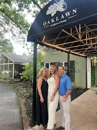
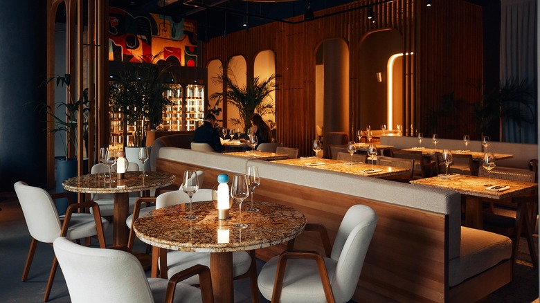

Careers at Oaklawn
Join the
Oaklawn team.
Hospitality is the work. Making an evening feel effortless is the craft.

Career opportunities
Interested in becoming part of the team?
Oaklawn invites prospective team members to begin the application process by leaving their name and contact information.
You can also reach Oaklawn directly at 731-407-4262.